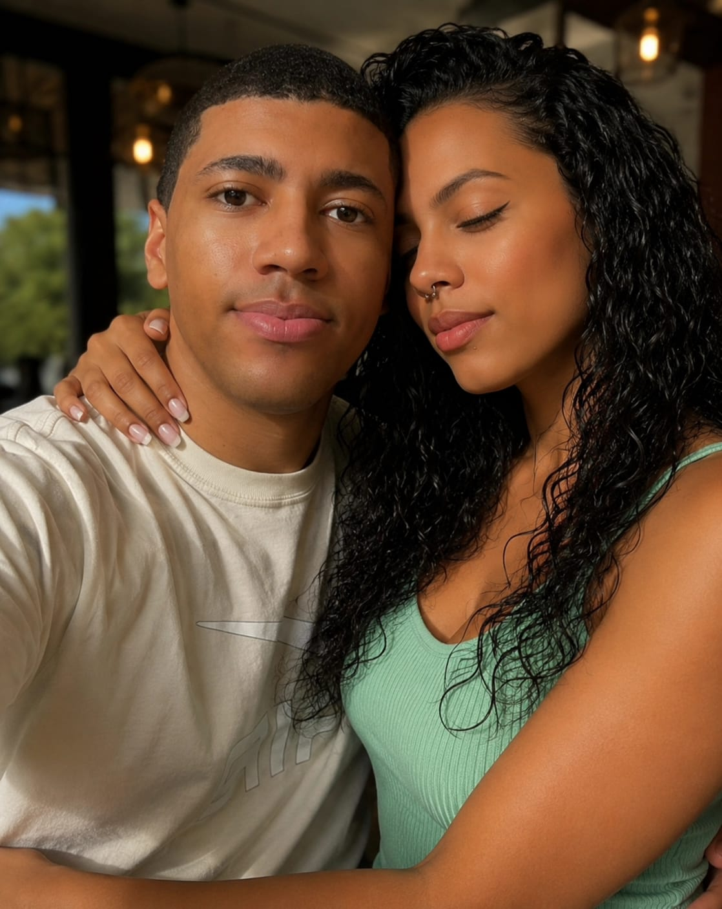

Um pedacinho de nós ❤️
Entre tantos lugares no mundo, existe um lugar especial que guardo comigo: aquele em que imagino nós dois juntos.

A distância pode separar lugares, mas não precisa separar corações. 💗
Mesmo longe, sempre conectados 🌎❤️
Existem quilômetros entre nós, mas também existe um sentimento que atravessa cada um deles. Preparei algo especial para lembrar que o amor pode encontrar caminhos mesmo quando os braços ainda não conseguem se alcançar.
Ver nossa surpresa especial ❤️Uma música para nós 🎶
Para ouvir pensando em nós, nos nossos sentimentos e em todos os momentos que ainda vamos viver juntos.
Dê o play e deixe essa música acompanhar um pouquinho do amor que preparei para você. ❤️
Uma carta para você, meu amor 💌
Meu amor, ❤️
Às vezes, eu queria que o mundo fosse um pouco menor, só para que a distância entre nós deixasse de existir. Queria poder olhar nos seus olhos enquanto digo tudo aquilo que, às vezes, as palavras não conseguem explicar. Queria transformar cada mensagem em um abraço, cada sentimento de saudade em um beijo na testa, em mais um instante ao seu lado.
Mas, mesmo com tantos quilômetros entre nós, existe algo que a distância não consegue mudar: o que sinto por você. Você se tornou alguém muito especial na minha vida, alguém que faz parte dos meus pensamentos, dos meus planos e dos sonhos que guardo para o futuro.
Amar você, mesmo de longe, é aprender que nem sempre podemos estar perto de quem queremos, mas podemos continuar escolhendo essa pessoa todos os dias. É encontrar felicidade em uma mensagem sua, sorrir ao lembrar de nós e sentir que, mesmo separados por lugares diferentes, existe algo bonito que nos une.
Eu não quero que nosso amor seja feito apenas de saudade e espera. Quero que seja feito de confiança, carinho, respeito, companheirismo e de todos aqueles pequenos momentos que, um dia, poderemos viver juntos. Quero conhecer novos lugares com você, rir das coisas mais bobas, compartilhar meus dias e estar presente também quando as coisas não forem tão fáceis.
Não posso prometer que todos os dias serão perfeitos, mas quero que você saiba que o que sinto por você é sincero. Quero cuidar do nosso amor com paciência, demonstrar o quanto você é importante para mim e nunca deixar que a distância faça você duvidar do lugar que ocupa no meu coração.
Se hoje precisamos contar os quilômetros que nos separam, espero que um dia possamos olhar para trás e lembrar de tudo o que enfrentamos até finalmente estarmos juntos. E, quando esse dia chegar, quero que cada abraço carregue um pouquinho de toda a saudade que sentimos.
Você não é apenas alguém de quem sinto saudade. Você é alguém com quem quero compartilhar momentos, construir lembranças e imaginar o amanhã. E, enquanto esse amanhã não chega, quero continuar encontrando maneiras de fazer você se sentir amada, mesmo quando meus braços não puderem te alcançar.
Eu te amo, meu amor. E, mesmo que hoje exista uma distância entre nós, meu coração continua encontrando o caminho até você. ❤️
Com todo o meu amor, para você...
de Lê para Danny, minha PRETA !